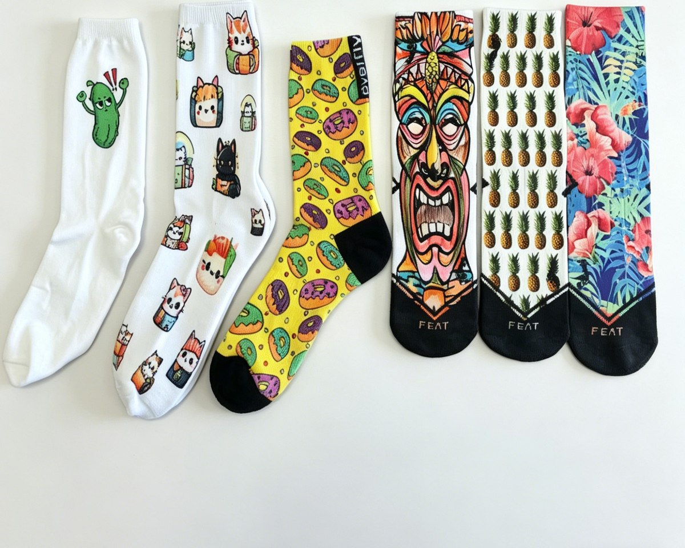

Product — 03
Photographic artwork, gradients and full-bleed colour — the only route when a design has more colours than a knitting machine can carry.

In detail
Sublimation dyes the yarn rather than coating it, so full-bleed artwork stays soft and does not peel. It suits tie-dye effects, photographic prints, sponsor blocks and any design with gradients. Printing is applied to a white or light base for the cleanest result.
Specification
Anything outside this table is possible — it needs a conversation and a sample.
| Colours | Unlimited — full-colour process |
|---|---|
| Base | White or light ground for best saturation |
| Best for | Character art, photo prints, seasonal ranges |
| MOQ | 100 pairs per style per colour (knee-high 200 pairs) |
| Sampling | 3–5 days after artwork approval |
| Bulk lead time | 20 days for 1–500 pairs; rush available |
| Needle gauge | 144N / 168N / 200N |
| Yarn | Combed cotton, polyester, acrylic, nylon, spandex blends |
| Sizes | EU 35–46, US 5–13, or to your size chart |
| Packing | Poly bag, header card, hang tag, retail box |
| Trade terms | EXW / FOB / CIF / DDP — quoted per order |
Questions buyers ask
Straight answers, no sales copy.
Sublimation dyes the polyester fibre itself, so there is no raised layer. On cotton the same artwork goes through heat transfer or screen print.
No. Gradients, photographs and full-bleed artwork all work.
Sublimated polyester holds through industrial washing. Heat transfer on cotton is softer in the hand and needs a gentler cycle.
Polyester when colour depth matters, cotton when hand-feel matters more.
Also made here
Same floor, same minimum, same sample window.
Tell us the sock type, quantity band and market. Final artwork is not required to start — a sketch or reference photo is enough.